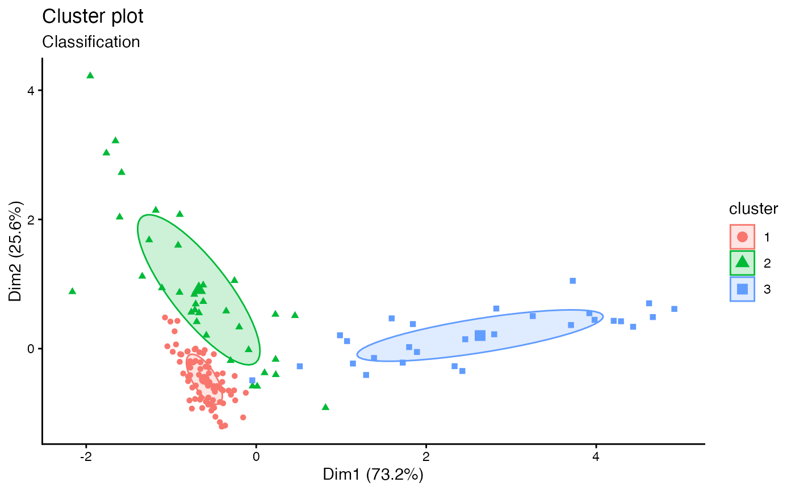

Plots the classification, the uncertainty and the BIC values returned by the Mclust() function.
fviz_mclust(
object,
what = c("classification", "uncertainty", "BIC"),
ellipse.type = "norm",
ellipse.level = 0.4,
ggtheme = theme_classic(),
...
)
fviz_mclust_bic(
object,
model.names = NULL,
shape = 19,
color = "model",
palette = NULL,
legend = NULL,
main = "Model selection",
xlab = "Number of components",
ylab = "BIC",
...
)an object of class Mclust
choose from one of the following three options: "classification" (default), "uncertainty" and "BIC".
Character specifying frame type. Possible values are
'convex', 'confidence' or types supported by
stat_ellipse including one of c("t", "norm",
"euclid").
the size of the concentration ellipse in normal
probability. Passed for ggplot2::stat_ellipse 's level. Ignored in
'convex'. Default value is 0.95.
function, ggplot2 theme name. Default value is theme_pubr(). Allowed values include ggplot2 official themes: theme_gray(), theme_bw(), theme_minimal(), theme_classic(), theme_void(), ....
other arguments to be passed to the functions fviz_cluster and ggpar.
one or more model names corresponding to models fit in object. The default is to plot the BIC for all of the models fit.
point shape. To change point shape by model names use shape = "model".
point and line color.
the color palette to be used for coloring or filling by groups. Allowed values include "grey" for grey color palettes; brewer palettes e.g. "RdBu", "Blues", ...; or custom color palette e.g. c("blue", "red"); and scientific journal palettes from ggsci R package, e.g.: "npg", "aaas", "lancet", "jco", "ucscgb", "uchicago", "simpsons" and "rickandmorty". Can be also a numeric vector of length(groups); in this case a basic color palette is created using the function palette.
character specifying legend position. Allowed values are one of c("top", "bottom", "left", "right", "none"). To remove the legend use legend = "none". Legend position can be also specified using a numeric vector c(x, y); see details section.
plot main title.
character vector specifying x axis labels. Use xlab = FALSE to hide xlab.
character vector specifying y axis labels. Use ylab = FALSE to hide ylab.
A ggplot2 object.
fviz_mclust(): Plots classification and uncertainty.
fviz_mclust_bic(): Plots the BIC values.
if(requireNamespace("mclust", quietly = TRUE)){
# Compute model-based-clustering
library("mclust")
data("diabetes")
mc <- Mclust(diabetes[, -1])
# Visaulize BIC values
fviz_mclust_bic(mc)
# Visualize classification
fviz_mclust(mc, "classification", geom = "point")
}
#> Package 'mclust' version 6.1.2
#> Type 'citation("mclust")' for citing this R package in publications.
